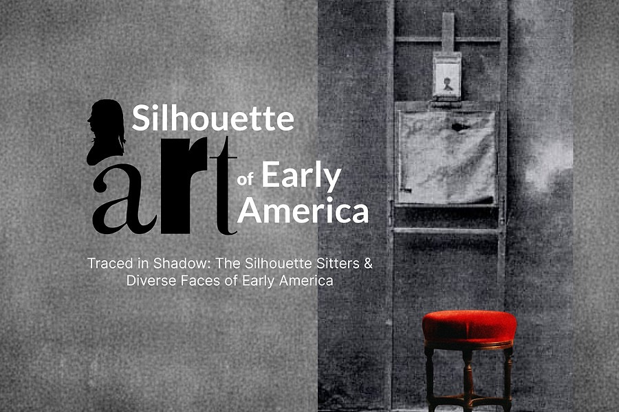
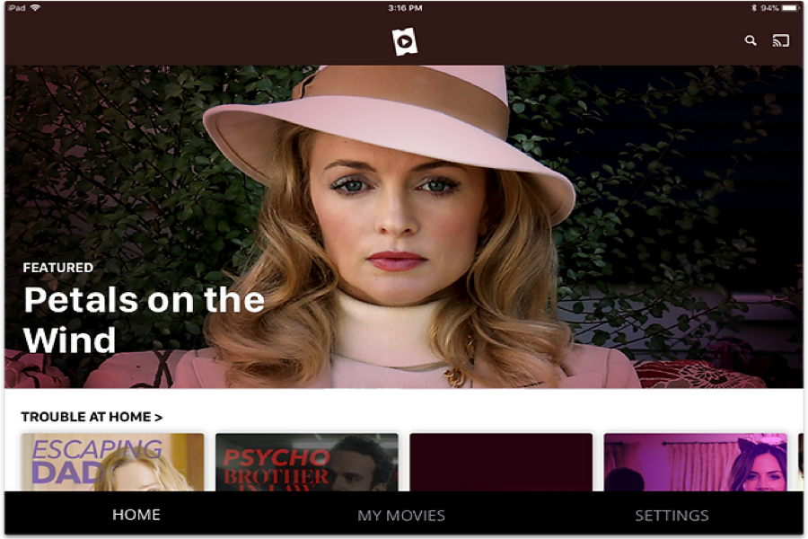

Portfolio

B2B Product Design
Segment Opportunity Simulator
A strategic tool designed to help teams visualize market opportunities and make data-driven decisions.

B2B Product Design (Agentic)
AI Research Assistant
An innovative approach to autonomous systems that empowers users to collaborate with AI agents.
Data Visualization · Parsons MS Thesis
Louis Armstrong in Data and Song
An interactive exploration of Louis Armstrong's musical legacy through data visualization. This thesis project combines archival research with modern design to reveal patterns in his performances and recordings across decades.
AI/ML
Machine Learning
A collection of machine learning experiments and visualizations that make complex AI concepts accessible.

Data Visualization · AI Product
Silhouette Art of Early America
An AI-powered archive that brings 18th and 19th century silhouette portraits into the digital age.
B2C Product Design
HISTORY Vault
A premium streaming service offering thousands of commercial-free documentaries and historical content.

B2C Product Design
Lifetime Movie Club
A subscription streaming platform dedicated to Lifetime's extensive movie library.